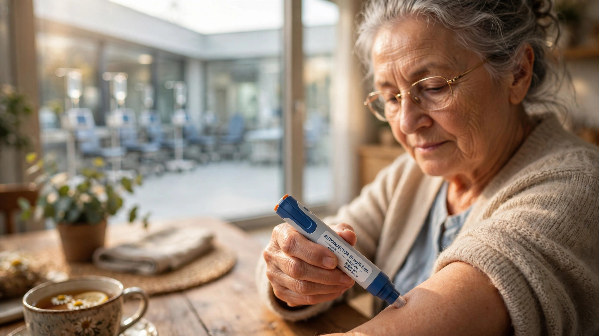

Alzheimer’s First At-Home Drug Just Freed 160,000 Infusion Chair Hours. The Bottleneck Was Never the Needle.
On Monday the FDA approved Leqembi’s subcutaneous autoinjector for at-home use from the very first dose. Cross-referencing a USC infusion-capacity study with a Springer cost model reveals each patient who starts at home instead of an infusion center frees 74 hours of chair time and saves $80,925 over four years. But Citi analysts are right that the real barriers run deeper than logistics.

One hundred and sixty thousand, three hundred and three. That is the number of infusion chair hours American clinics currently devote each year to pumping Leqembi into veins at $190 per session, biweekly, while caregivers sit in waiting rooms burning through cell phone batteries and vacation days. As of Monday, the FDA says none of those hours are medically necessary.
Eisai and Biogen’s supplemental approval grants Leqembi IQLIK, a subcutaneous autoinjector, clearance for at-home use from the very first dose. Patients or caregivers can administer a weekly 500 mg injection at their kitchen table. No infusion center appointment, no IV line, no one-hour drip plus thirty-two minutes of pre-infusion prep plus twenty-two minutes of post-infusion monitoring. Just a pen-sized device pressed against the thigh.
That changes the economics of Alzheimer’s treatment in ways the headline approval does not capture.
Why Chairs Matter More Than Chemistry
Before Monday, every new Leqembi patient followed the same path: eighteen months of biweekly intravenous infusions at a physician’s office or hospital outpatient center, totaling thirty-nine clinic visits before they could switch to at-home subcutaneous maintenance. Each visit consumed roughly 114 minutes of facility time. Thirty-nine visits meant 4,446 minutes, or 74.1 hours, of infusion chair capacity locked up per patient before the healthcare system could free that seat for someone else.
A 2025 study from USC’s Brain Health Observatory published in the Journal of Alzheimer’s Disease quantified the resulting bottleneck. Chen et al. estimated that US infusion capacity for Alzheimer’s treatments stood at 370,000 sessions in 2024 and would grow to 5.2 million by 2033. Demand, however, will outpace supply by over 13 million infusions that year. Result: 2.2 million patients facing delayed access to treatment, each year of delay representing avoidable cognitive decline in a disease that only moves in one direction.
Monday’s approval cuts Leqembi’s contribution to that bottleneck to zero. Patients who begin treatment today never need an infusion chair. Not once.
The Capacity Math Behind the Headlines
Here is a calculation that does not appear in Eisai’s press release, Biogen’s earnings call, or the USC study. Cross-referencing Biogen’s Q1 2026 financials with the drug’s wholesale acquisition cost reveals the current US patient count, and from there, the capacity math unfolds.
Biogen reported $86 million in US Leqembi revenue for Q1 2026. At a wholesale acquisition cost of $26,500 per patient per year, that implies approximately 3,245 patients on active US treatment, each receiving 26 biweekly infusions annually for a total of 84,370 infusions per year, consuming 160,303 hours of clinic time. That is 22.8 percent of the entire 2024 US infusion capacity base for Alzheimer’s drugs, consumed by one product treating roughly 3,200 people in a country with 6.5 million Alzheimer’s patients.
| Metric | IV (Infusion Center) | SC (At Home) |
|---|---|---|
| Frequency | Every 2 weeks | Weekly |
| Administration time per dose | 114 min (prep + infusion + monitoring) | 38.6 min (self-administered) |
| Patient travel time per dose | 27.1 min each way | 0 min |
| HCP time per dose | 33 min | 0 min (after training) |
| Facility administration cost per dose | $190.15 (blended average) | $0 |
| Year 1 administration costs | $4,957 | $0 |
| Systemic reaction rate | ~26% | <1% |
| Infusion chair sessions (18-month initiation) | 39 | 0 |
Sources: Springer cost model (2025), Eisai/Biogen AAIC 2026 data, FDA labeling
A cost-comparison model published by Springer in July 2025 calculated the per-patient savings at $80,925 over four years when SC replaces IV from the outset: $40,638 from reduced treatment costs, $8,151 from eliminated administration time for healthcare providers, patients, and caregivers, and $32,136 from quality-of-life improvements valued at $200,000 per quality-adjusted life year gained. Scaled to population level at a conservative 49.4 percent SC uptake rate drawn from oncology analogues, the model projected $3.16 to $3.71 billion in societal savings over the same period.
But the capacity number is what changes the game. If Biogen achieves the 15 percent quarterly growth in new patient starts it reported in Q2 2025, roughly 5,000 new patients will begin Leqembi this year. Under the old IV-first pathway, those 5,000 patients would have consumed 195,000 infusion sessions over their first eighteen months, an amount equal to 52.7 percent of the entire 2024 US AD infusion capacity base. Under the new pathway, they consume zero. That freed capacity does not just benefit Alzheimer’s patients. Infusion centers treat cancer, autoimmune disease, and rare genetic conditions in the same chairs. Every Leqembi session that disappears from the schedule is a session available for someone else.
What the Skeptics Get Right
Citi analysts responded to Monday’s approval with a note that could have been written before the data was in: they do not expect immediate commercial inflection. They are probably correct, and for reasons more stubborn than infusion logistics.
Infusion access was never the primary bottleneck; diagnosis was. Only 19.9 percent of Americans with early-stage Alzheimer’s have been clinically identified, according to the epidemiological data underpinning the Springer model. Of those diagnosed, only 5 percent are currently treated, per a retrospective study at Norton Neuroscience Institute. Applying real-world trial eligibility criteria narrows the pool further: a 2026 analysis in the Medical Journal of Australia found that between 5 and 20 percent of patients with mild cognitive impairment or early dementia actually qualify for anti-amyloid therapy once comorbidities like cardiovascular disease, anticoagulant use, and seizure history are excluded.
Then there is the monitoring problem, because SC initiation does not eliminate clinic visits entirely. Patients still need an MRI before treatment begins, plus at least three follow-up MRIs during the first year to watch for amyloid-related imaging abnormalities, which present as brain swelling or microbleeds in roughly 12.5 percent and 17.0 percent of treated patients, respectively, based on Clarity AD trial data. ARIA can be fatal. Monitoring it requires specialized neuroradiology capacity that a kitchen-table autoinjector does nothing to create.
And the drug itself remains contested. Leqembi slowed cognitive decline by 27 percent over eighteen months in the Phase 3 Clarity AD trial. Statistically significant. Clinically? Dr. Michael Greicius at Stanford’s Center for Memory Disorders told Reuters the differences are “likely small enough as to be undetectable by patients and family members or physicians.” Fewer than half of US neurologists recommend the drug, according to a Spherix Global Insights survey. Some view the infusion requirement as a feature, not a bug: it forced regular clinical contact with patients who need monitoring. Removing it could reduce the frequency at which ARIA or other complications are caught.
The Diagnosis Bottleneck Is Loosening Too
If the story ended with infusions and skeptics, the bull case for SC Leqembi would be weak. It does not end there.
In May 2025, the FDA cleared the first blood test for diagnosing Alzheimer’s disease by detecting amyloid pathology, eliminating the need for a $5,000 amyloid PET scan or an invasive lumbar puncture for many patients. Combined with at-home SC dosing, a future patient pathway could look like this: primary care physician orders a blood draw, confirms amyloid positivity, prescribes an autoinjector shipped to the patient’s home, and monitors with periodic MRIs. No infusion center required, no specialist referral bottleneck for initiation, and no eighteen-month IV runway before the drug reaches the arm that actually needs it.
That pathway does not exist today. Insurance coverage is inconsistent, MRI monitoring protocols require specialist oversight, and Medicare’s conditional coverage still demands participation in a patient registry. But the pieces are accumulating faster than the regulatory infrastructure is updating.
Meanwhile, the clinical data behind SC Leqembi is solidifying. At the Alzheimer’s Association International Conference in London on July 13, Eisai and Biogen presented data showing the weekly 500 mg SC autoinjector achieved bioequivalent drug exposure to the IV regimen: an exposure ratio of 104 percent with a 90 percent confidence interval of 99.1 to 109 percent. Amyloid clearance, CDR-SB clinical efficacy, and ARIA-E incidence were driven by lecanemab exposure rather than route of administration. Patient and caregiver satisfaction with SC administration ranged from 75 to 97 percent across two US sites. In a separate case series, ten of eleven evaluable patients on SC maintenance showed stable or improved MMSE scores after six or more months.
What This Analysis Cannot Show
Several assumptions deserve scrutiny. Deriving patient counts from quarterly revenue is inexact: it assumes $26,500 wholesale acquisition cost as the effective price, ignoring rebates, discounts, and partial-year patients who inflate the denominator. Real patient counts could be 10 to 20 percent higher, which would increase the freed capacity calculation proportionally. The USC infusion capacity model projects to 2033 based on survey data and published utilization trends; actual capacity expansion will depend on capital investment decisions by hospital systems and standalone infusion providers that have not yet been made. And the Springer model’s $80,925 savings figure uses a societal perspective that monetizes quality-of-life improvements at $200,000 per QALY. From a strict payer perspective, the savings are roughly $49,000, still substantial but less than the headline number. Finally, the SC uptake rate of 49.4 percent used in the population-level analysis comes from oncology analogues, specifically rituximab adoption patterns, because no Alzheimer’s-specific data exists yet. Uptake could be substantially higher in a population where caregivers are the primary treatment administrators and travel to infusion centers is among the most-cited barriers to adherence.
What This Means for You
For patients and caregivers, Monday’s approval eliminates the single most time-consuming logistic of Leqembi treatment: twenty-six round trips to an infusion center per year, each consuming two to three hours of total time for patient, caregiver, and clinic. Ask your neurologist whether SC initiation is available and whether your insurance covers it under the same Medicare Part B framework as the IV formulation. If your provider has not yet set up SC prescribing protocols, the AAIC 2026 bioequivalence data and FDA labeling now give them the clinical basis to do so.
For clinicians running infusion centers, the math is straightforward: each Leqembi patient transitioned or initiated on SC frees 74 hours of chair time in the first eighteen months. At typical utilization rates, that is enough capacity to initiate two new oncology patients on biweekly regimens. If your center treats Alzheimer’s patients and has a waitlist for any infusible therapy, SC Leqembi is the fastest path to freeing chairs.
For investors tracking anti-amyloid adoption curves, the signal to watch is not this quarter’s prescription numbers. It is the ratio of SC-to-IV new starts over the next twelve months. If SC uptake exceeds the 49.4 percent oncology benchmark, the infusion bottleneck disappears faster than the Springer model projects, and the real constraint shifts entirely to diagnosis and monitoring capacity. That is a very different investment thesis than “nobody wants this drug.”
STAT reported in May 2026 that Medicare is spending far less than projected on anti-amyloid drugs. That number should change. Not because a needle moved from a vein to a thigh, but because removing 160,000 chair hours from the system reveals what was always underneath the slow uptake: a diagnostic pipeline that has not yet caught up to the drugs waiting at the end of it. When it does, the chairs will not matter. The blood test will.